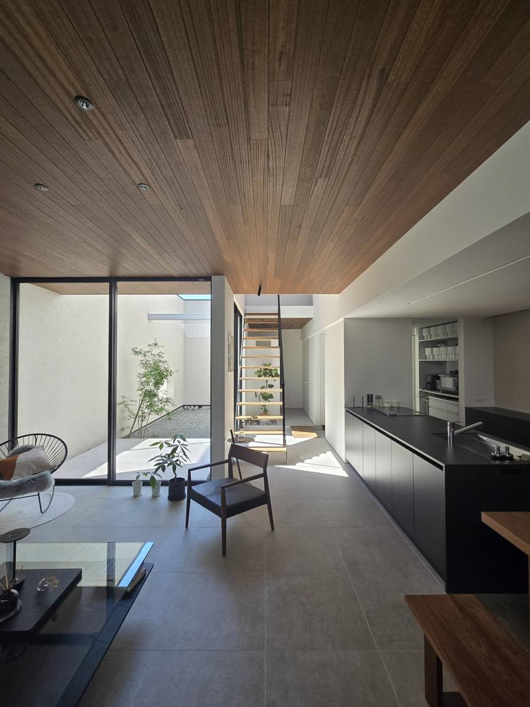
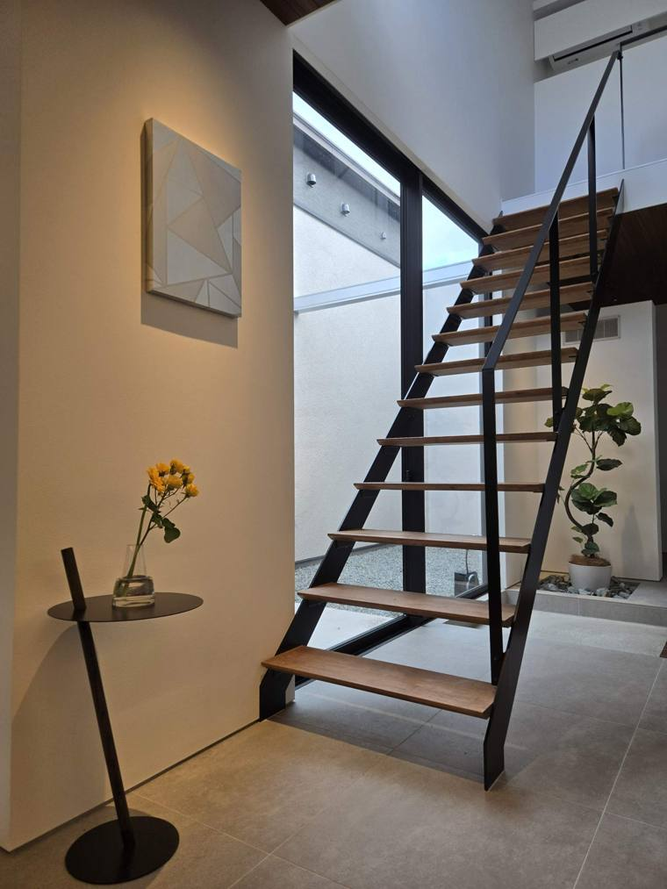
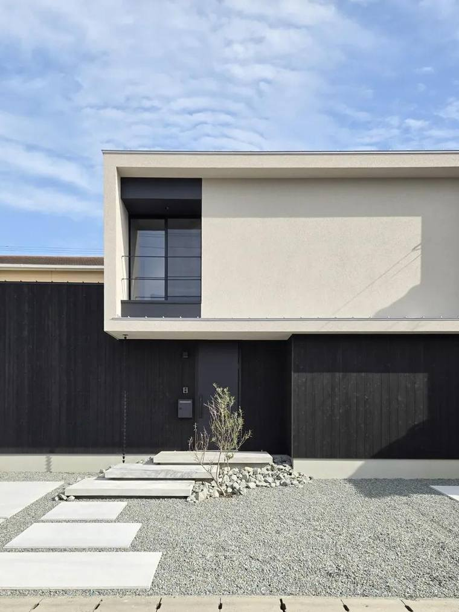
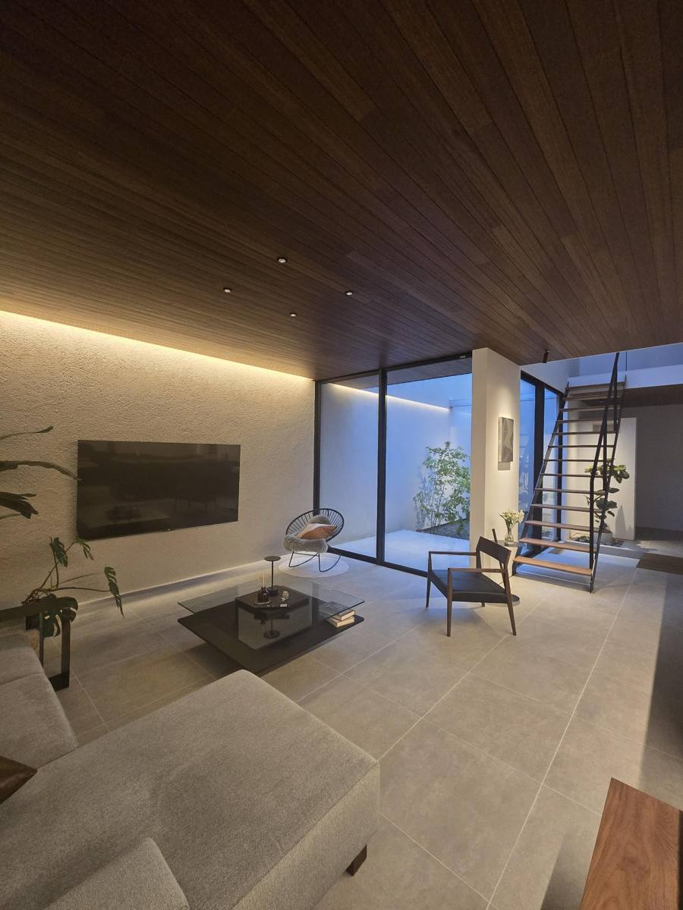
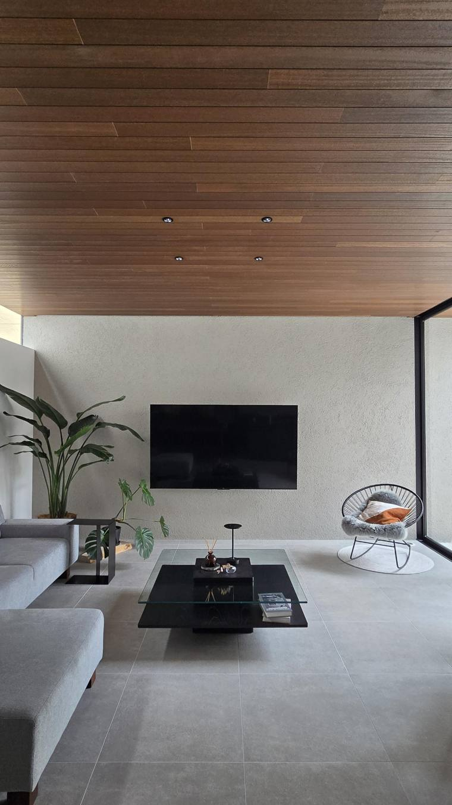
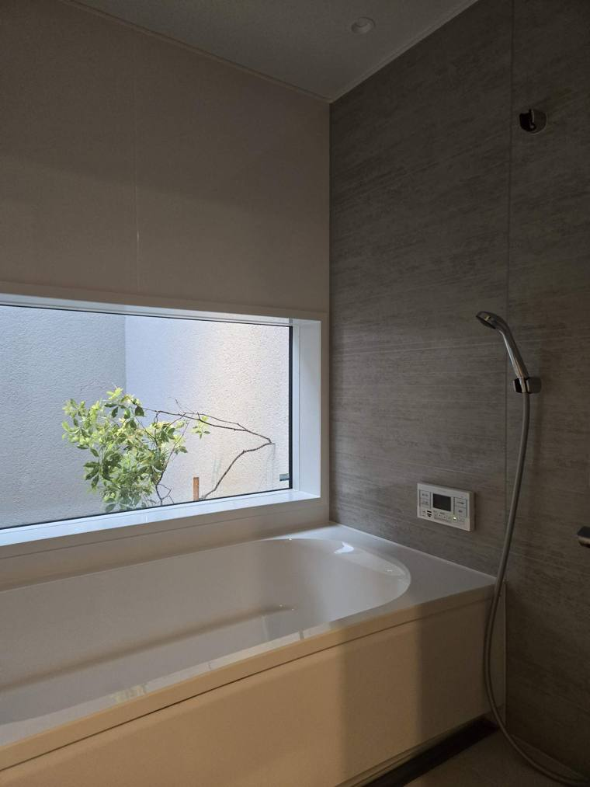
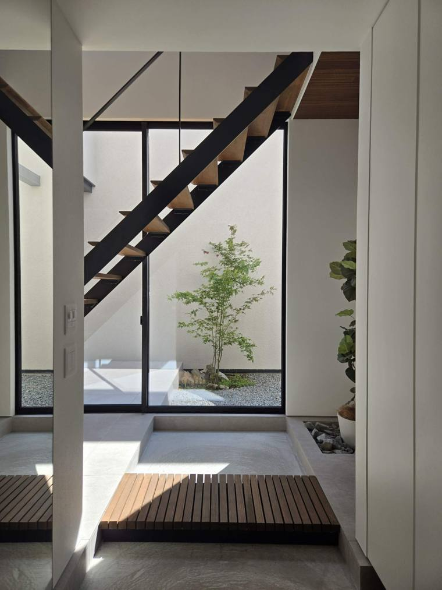

01
空間構成とつながり
建物の内と外を別々に考えるのではなく、ひとつの空間として設計する。
天井や軒先、窓のラインを丁寧にそろえることで、視線が自然と外へ抜け、空間に広がりが生まれます。
中庭や植栽も室内との関係から計画し、建築全体に統一感を持たせます。
DESIGN CONCEPT
自分たちが暮らす家が、どこよりもお気に入りの空間であってほしい。
そんな想いを大切に、一人ひとりの暮らし方や価値観に耳を傾けながら、その人らしい暮らしを提案しています。
建築とインテリアを分けず、空間全体をひとつのデザインとして考える。
余計な装飾を加えるのではなく、光の入り方や素材の質感、細部の納まりを大切に、時を重ねても愛着の深まる暮らしを目指しています。

建物の内と外を別々に考えるのではなく、ひとつの空間として設計する。
天井や軒先、窓のラインを丁寧にそろえることで、視線が自然と外へ抜け、空間に広がりが生まれます。
中庭や植栽も室内との関係から計画し、建築全体に統一感を持たせます。


美しい空間をつくるために、必ずしも多くの装飾は必要ありません。
木、塗り壁、タイルなど、素材そのものの質感を大切にし、色数や素材の切り替えを抑える。
巾木や建具の枠、壁と天井の取り合いなど、細部の納まりまで丁寧に整えることで、シンプルでありながら奥行きのある空間を目指します。

照明は、空間全体を均一に明るくするためだけのものではないと考えています。
塗り壁の質感を引き立てる間接照明、植栽やアートを照らすスポットライト、家具やテーブルを美しく見せる光。
何を照らし、何を照らさないか。
光と影のバランスを考え、昼と夜で異なる表情を楽しめる空間を設計します。

建物が完成したときではなく、家具が入り、暮らしが始まったときの美しさまで考える。
ソファやダイニングテーブルの配置、家具の高さや素材、アートや小物とのバランス。
必要に応じて具体的な家具やメーカー・品番まで選定し、建築とインテリアが自然に調和する空間を目指します。


庭や植栽は、建築を完成させる大切な要素のひとつです。
室内から見える樹木の位置、窓から切り取る景色、季節によって変化する光と影。
建物と庭を一体で考え、自然を身近に感じられる住まいをつくります。